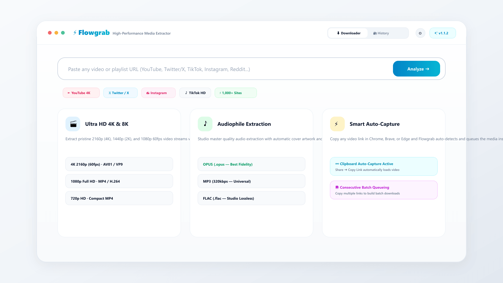

Flowgrab is a modern, privacy-first desktop application for downloading pristine 4K video, studio Opus/FLAC audio, and batch playlists from 1,000+ sites with instant browser clipboard capture.

Built for power users, audiophiles, researchers, and creators demanding unthrottled downloads.
Download at native bitrate — 4K 2160p 60fps HDR, 1440p 2K, 1080p Full HD with AV01 and VP9 codec support.
Extract pristine Opus (.opus) for pure fidelity, 320kbps MP3 for universal playback, or studio lossless FLAC and WAV.
Click Share ➔ Copy Link in Chrome/Brave and Flowgrab automatically detects, parses, and queues the media.
Copy 5, 10, or 20 links one after another from your browser to queue them into a batch list and download in parallel.
Automatically embed complete ID3 metadata (Title, Artist, Album, Date) and high-resolution cover artwork directly into files.
Never visit GitHub manually for updates. The in-app updater streams new releases in the background and auto-launches the installer.
Drag this button to your bookmarks bar to send any YouTube, Twitter, TikTok, or Instagram video directly to Flowgrab:
javascript:window.location.href='flowgrab://'+encodeURIComponent(window.location.href);
Tip: Press Ctrl + Shift + B to show bookmarks bar, then drag the button above!
| Feature | Flowgrab Downloader | Web Scrapers (Y2Mate, SnapSave) | Commercial Tools |
|---|---|---|---|
| 4K 60FPS & 8K Video | ✓ Native Unthrottled | ✗ Blocked or 720p Cap | Paid License Required |
| Ad & Tracker Free | ✓ 100% Clean (0 Ads) | ✗ Popups, Malware & Redirects | Upgrade Prompts |
| Opus & FLAC Lossless Audio | ✓ Direct Extraction | ✗ Low Quality 128k MP3 | Limited Formats |
| Clipboard Auto-Capture | ✓ Instant Background Detection | ✗ Manual Copy-Paste | Manual Click |
| License & Cost | ✓ 100% Free (MIT Open Source) | Ad-supported | $20 - $40 / Year |
Flowgrab Downloader is a high-performance, open-source desktop application built on Tauri v2, yt-dlp, and FFmpeg. Unlike ad-ridden web downloaders, Flowgrab operates locally with 0 ads, 0 tracking, and unthrottled gigabit speeds.
When Clipboard Auto-Capture is enabled, copying any media URL in your browser immediately loads and analyzes the video in Flowgrab. Copying subsequent links automatically queues them into the Batch Queue.
Flowgrab extracts 4K (2160p), 2K (1440p), 1080p Full HD, and 720p in MP4, MKV, and WebM. For audio, it extracts OPUS, MP3 (320kbps), M4A, FLAC, and WAV.
Yes! Flowgrab Downloader is 100% free and open source under the MIT License on GitHub.